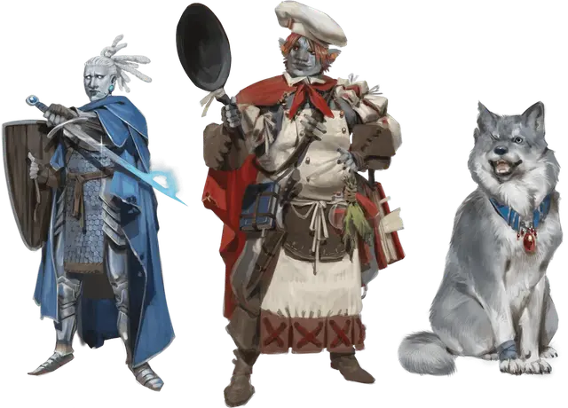

Боец
Warrior Sidekick
Класс напарника

| Уровень | Бонус мастерства | Умения |
|---|---|---|
| 1 | +2 | Бонусные владения, Воинская роль |
| 2 | +2 | Второе дыхание (1 использование) |
| 3 | +2 | Улучшенные критические попадания |
| 4 | +2 | Увеличение характеристик |
| 5 | +3 | — |
| 6 | +3 | Дополнительная атака (1 дополнительная атака) |
| 7 | +3 | Боеготовность |
| 8 | +3 | Увеличение характеристик |
| 9 | +4 | — |
| 10 | +4 | Улучшенная оборона |
| 11 | +4 | Упорство (1 использование) |
| 12 | +4 | Увеличение характеристик |
| 13 | +5 | — |
| 14 | +5 | Увеличение характеристик |
| 15 | +5 | Дополнительная атака (2 дополнительные атаки) |
| 16 | +5 | Увеличение характеристик |
| 17 | +6 | — |
| 18 | +6 | Упорство (2 использования) |
| 19 | +6 | Увеличение характеристик |
| 20 | +6 | Второе дыхание (2 использования) |
Описание
Классы напарников являются инструментом Мастера на тот случай, если неигровому персонажу второстепенного плана, что путешествует вместе с персонажами игроков, необходимо дать классовые умения. Имейте в виду: этот и другие классы напарников заведомо слабее классов из «Книги игрока». Общую статью о напарниках вы можете отыскать в этой статье.
— Господин Финик
Боец растит свою боевую доблесть, когда сражается рядом с вами. Это может быть солдат, городской стражник, боевой зверь или любое другое существо, выращенное для боя.
Напарник получает следующие характеристики класса по мере продвижения в уровнях, как показано в таблице «Боец».
Уровень 1: Бонусные владения
1-й уровень, умение бойца
Напарник получает владение одним из следующих спасбросков по вашему выбору: Сила, Ловкость или Телосложение.
Кроме того, напарник получает владение двумя навыками по вашему выбору из следующего списка: Акробатика, Атлетика, Восприятие, Выживание, Запугивание, Природа или Уход за животными.
Напарник получает владение всеми типами доспехов, и если он гуманоид или имеет простое или воинское оружие в своём блоке статистики, он также получает владение щитами и всеми видами простого и воинского оружия.
Уровень 1: Воинская роль
1-й уровень, умение бойца
Каждый боец сосредотачивает свои тренировки на нападении или защите. Выберите один из следующих вариантов:
- Атакующий. Напарник получает бонус +2 ко всем броскам атаки.
- Защитник. Напарник может использовать реакцию, для создания помехи на бросок атаки существа в пределах 5 футов от него, если напарник не является целью атаки, и при условии, что напарник может видеть нападающего.
Уровень 2: Второе дыхание
2-й уровень, умение бойца
Напарник может бонусным действием восстановить хиты, равные 1к10 + уровень напарника в классе бойца.
Использовав это умение, напарник должен завершить короткий либо продолжительный отдых, чтобы получить возможность использовать умение снова.
Напарник может использовать это умение дважды между отдыхами, начиная с 20-го уровня.
Уровень 3: Улучшенные критические попадания
3-й уровень, умение бойца
Броски атаки напарника считаются критическими при выпадении «19» или «20» на к20.
Уровень 4: Увеличение характеристик
4-й уровень, умение бойца
На 4-м, 8-м, 12-м, 14-м, 16-м и 19-м уровнях напарник повышает значение одной из характеристик по вашему выбору на 2, или двух характеристик по вашему выбору на 1. Значение повышаемой характеристики напарника не может стать выше 20 с использованием этого умения.
Уровень 6: Дополнительная атака
6-й уровень, умение бойца
Если напарник в свой ход совершает действие Атака, то он может совершить две атаки вместо одной. Количество атак увеличивается до трех, когда напарник достигает 15-го уровня.
Если у напарника есть действие «Мультиатака», он может использовать «Дополнительную атаку» или «Мультиатаку» в свой ход, но не то и другое одновременно.
Уровень 7: Боеготовность
7-й уровень, умение бойца
Напарник совершает броски инициативы с преимуществом.
Уровень 10: Улучшенная оборона
10-й уровень, умение бойца
Класс Доспеха напарника увеличивается на 1.
Уровень 11: Упорство
11-й уровень, умение бойца
Напарник может повторно совершить проваленный спасбросок, но он должен использовать новое выпавшее значение. Когда напарник использует это умение, то его нельзя использовать снова, пока напарник не закончит продолжительный отдых.
Начиная с 18-го уровня, напарник может использовать это умение дважды, после чего потребуется совершить продолжительный отдых, чтобы использовать умение снова.